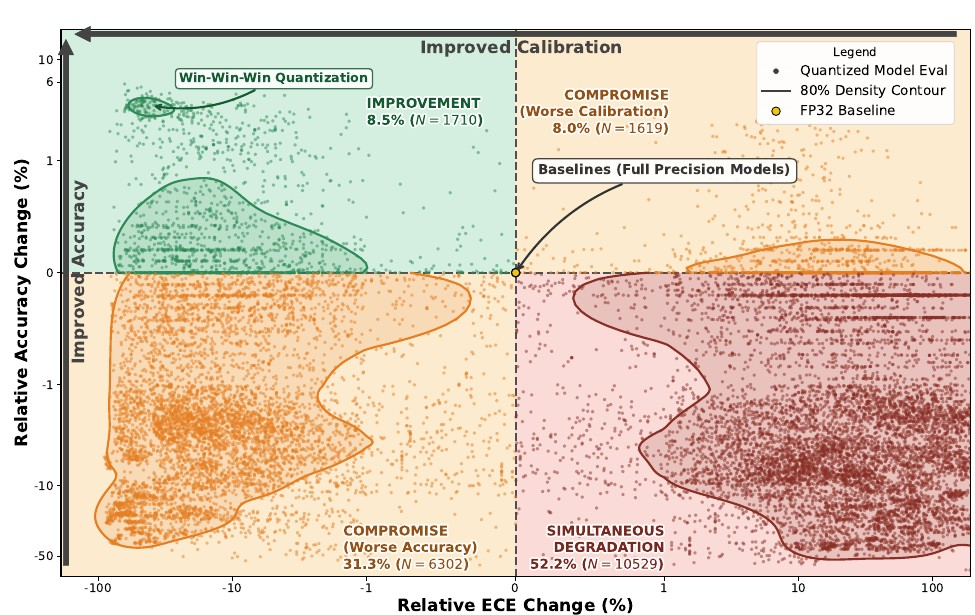

Less Precise Can Be More Reliable:
A Systematic Evaluation of Quantization's Impact on VLMs Beyond Accuracy
1Université Paris-Saclay, CEA-List · 2Computer Vision Center, Barcelona

Vision-Language Models (VLMs) such as CLIP have revolutionized zero-shot classification and safety-critical tasks, including Out-of-Distribution (OOD) detection. However, their high computational cost hinders efficient real-world deployment. While quantization is a standard solution for efficiency, its broader impact on reliability metrics beyond simple Top-1 accuracy remains critically under-explored. In this study, we conduct a large-scale evaluation of VLM quantization across a comprehensive experimental suite of over 700k evaluation runs with varying configurations. We find that, contrary to the assumption that quantization's noise degrades performance, it can simultaneously improve accuracy, calibration, OOD detection, and robustness to noise, though not to covariate shift or spurious correlations. We leverage these counterintuitive findings to characterize the mechanics of quantization beyond simple regularization: we show that quantization dampens high-rank spectral components, compelling the model to rely more heavily on robust, low-rank features. Ultimately, this spectral filtering effect drives the observed improvements in generalization and noise tolerance, establishing a pathway to deploy faster, more reliable VLMs by utilizing quantization beyond its conventional role.
What quantization does to a VLM's reliability
- Over 700k evaluation runs across CLIP-family models, quantization methods and bit-widths, scored on accuracy, calibration, OOD detection and robustness.
- Quantization can help reliability. In specific regimes it improves accuracy, calibration, OOD detection and robustness to noise at the same time.
- But not everything. It does not improve robustness to covariate shift or reliance on spurious correlations.
- Why: spectral filtering. Quantization dampens the high-rank spectral components of the features, so the model leans on robust low-rank directions.
BibTeX
@inproceedings{bouguerra26a,
title = {Less Precise Can Be More Reliable: A Systematic Evaluation
of Quantization's Impact on {VLMs} Beyond Accuracy},
author = {Bouguerra, Aymen and Montoya Vasquez, Daniel Alfonso and Gomez-Villa, Alexandra
and Mraidha, Chokri and Arnez, Fabio},
booktitle = {Proceedings of the 43rd International Conference on Machine Learning},
pages = {9363--9391},
year = {2026},
volume = {306},
series = {Proceedings of Machine Learning Research},
publisher = {PMLR},
url = {https://proceedings.mlr.press/v306/bouguerra26a.html}
}
Related work
@inproceedings{bouguerra2026disentangling,
title = {Disentangling the Good From the Bad: Quantization-Induced Flips Are Not Random},
author = {Bouguerra, Aymen and Arnez, Fabio and Gomez-Villa, Alexandra and Mraidha, Chokri},
booktitle = {Advances in Neural Information Processing Systems (NeurIPS)},
year = {2026}
}
@inproceedings{bouguerra2026perception,
title = {Quantization and Corruption Robustness in Deployed Road-Scene Perception},
author = {Bouguerra, Aymen and Radermacher, Ansgar and Arnez, Fabio and Mraidha, Chokri},
booktitle = {IEEE International Conference on Vehicular Electronics and Safety (ICVES)},
address = {Cochabamba, Bolivia},
year = {2026}
}